Mac OS и её настройка
Операционная система Mac OS. Нюансы работы
Начиная с OS X Mavericks компания Apple внедрила в систему удобный и простой способ упорядочивания и организации папок и файлов – с помощью тегов. Совершенно неважно, находятся ли файлы на компьютере или в iCloud, найти их можно будет в одно нажатие. Сегодня мы расскажем, как пользоваться данной опцией максимально эффективно.
Первый способ:
Вручную перетягиваем нужный файл на соответствующую метку. Не самый удобный способ, однако наиболее интуитивный.
Второй способ:
Выделив файл и используя контекстное меню: «Файл» – «Теги». Здесь можно будет выбрать нужную метку.
Третий способ:
Наиболее быстрый вариант, однако для этого нужно создать комбинацию.
- Открываем «Системные настройки».
- Ищем пункт «Клавиатура» – «Сочетание клавиш».
- Выбираем «Сочетания клавиш программ» и создаем новое, используя «+».
- В открывшемся окне назначаем Finder.app в качестве программы. В названии меню вводим «Теги…» (без кавычек, но обязательно с многоточием). Указываем сочетание клавиш на собственный выбор. 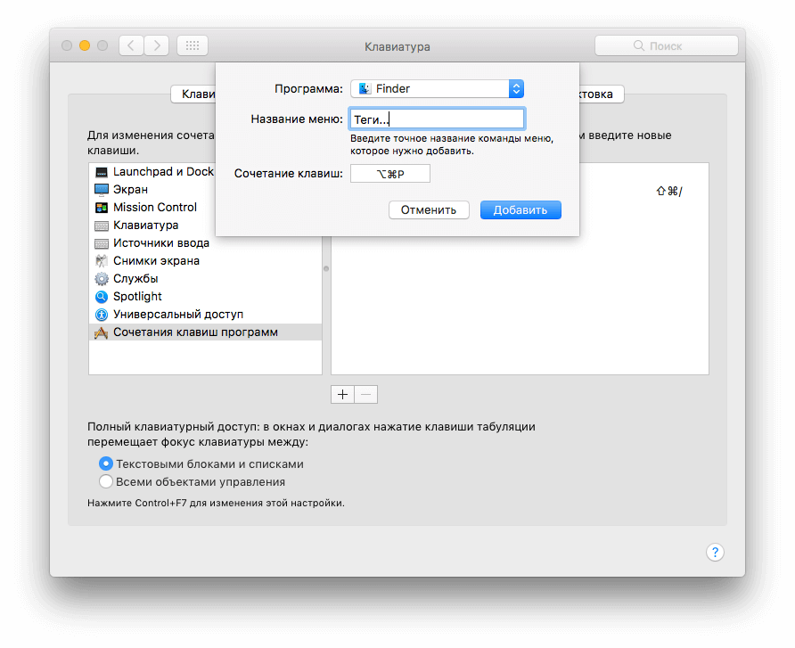
- Добавляем. Теперь мы можем легко вызывать меню меток, используя сочетание клавиш, присваивая файлам тот или иной тег. 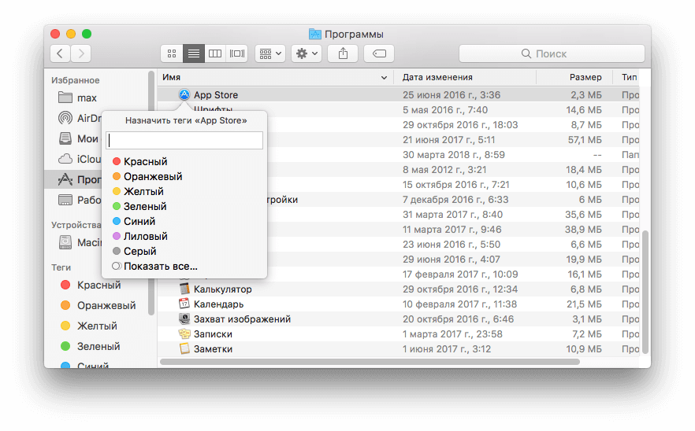
Можно ли создавать теги с собственным названием и цветом?
К сожалению, разновидностей расцветок всего семь, и добавить свой нельзя. При всем при этом один цвет может отвечать за несколько меток, поэтому это не так критично. Что касается названия, то здесь проблем нет. Указать можно абсолютно любое.
Можно ли присвоить файлу несколько меток?
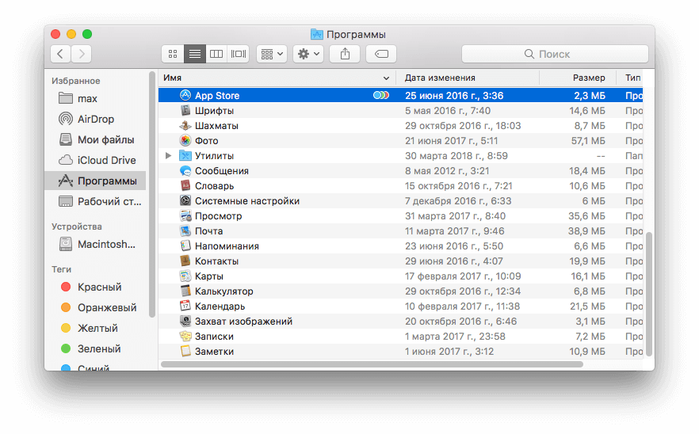Да, здесь нет ограничений. Однако при просмотре файла в Finder будет отображаться лишь часть из них.
Где можно настроить свои собственные метки?
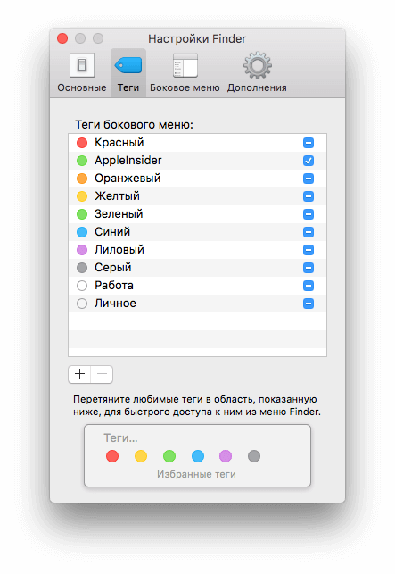Сделать это можно во вкладке Finder – Настройки – Теги. Для того чтобы добавить важные метки в область быстрого доступа, достаточно перенести их в окно «Избранные метки». Для добавления и удаления используем «+» и «–» соответственно.
Как осуществлять поиск по файлам с помощью тегов?
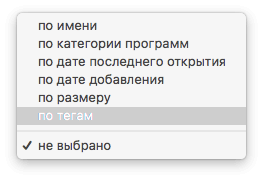Для этого достаточно ввести цвет или название метки, после чего выбрать из предложенных вариантов. Кроме того, можно настроить сортировку в Finder по меткам. Для этого заходим в меню «Вид» — «Упорядочить» — «по тегам» или используем комбинацию Control + Command + 7.
Настройка рабочего места. Запуски тестирование программ (репетиция дня С-1)
ИНФРАСТРУКТУРНЫЙ ЛИСТ
Инфраструктурный лист включает в себя всю инфраструктуру, оборудование и расходные материалы, которые необходимы для выполнения Конкурсного задания. Инфраструктурный лист обязан содержать пример данного оборудования и его чёткие и понятные характеристики в случае возможности приобретения аналогов
При разработке Инфраструктурного листа для конкретного чемпионата необходимо руководствоваться Инфраструктурным листом, размещённым на форуме экспертов Менеджером компетенции. Все изменения в Инфраструктурном листе должны согласовываться с Менеджером компетенции в обязательном порядке.
На каждом конкурсе технический эксперт должен проводить учет элементов инфраструктуры. Список не должен включать элементы, которые попросили включить в него эксперты или конкурсанты, а также запрещенные элементы.
По итогам соревнования, в случае необходимости, Технический эксперт и Главный эксперт должны дать рекомендации Оргкомитету чемпионата и Менеджеру компетенции о изменениях в Инфраструктурном листе.
МАТЕРИАЛЫ, ОБОРУДОВАНИЕ И ИНСТРУМЕНТЫ В ИНСТРУМЕНТАЛЬНОМ ЯЩИКЕ (ТУЛБОКС, TOOLBOX)
До соревнования эксперт-компатриот передает Техническому эксперту чемпионата по компетенции набор шрифтов (50 шрифтов); все наборы шрифтов доступны всем Конкурсантам во время Чемпионата.
Всем конкурсантам можно использовать музыкальную подборку (эксперты могут добавлять музыку до начала соревнования). По вопросам логистики обращаться к Техническому эксперту.
МАТЕРИАЛЫ И ОБОРУДОВАНИЕ, ЗАПРЕЩЕННЫЕ НА ПЛОЩАДКЕ
Любые материалы и оборудование, имеющиеся при себе у участников, необходимо предъявить экспертам. Главный эксперт имеет право запретить использование любых предметов, которые будут сочтены не относящимися к графическому дизайну, или же потенциально предоставляющими участнику несправедливое преимущество, вплоть до дисквалификации участника.
| ТЕМА/ЗАДАНИЯ | ПРАВИЛА ДЛЯ КОНКРЕТНЫХ КОМПИТЕНЦИЙ |
| Технические средства - USB,карты памяти |
|
| Технические средства — персональные портативные компьютеры, планшеты и мобильные телефоны |
|
| Технические средства — персональные устройства для фото- и видеосъемки. |
|
| Технические средства — другие устройства |
|
| Инструменты /инфраструктура |
|
| Чертежи, записи |
|
| Отказ оборудования |
|
| Охрана труда, техника безопасности и защита окружающей среды | |
| Прочее |
|
Создание сборки шрифтов для участия в Региональном чемпионате
Во всех макетах в регинональном конкурсе можно использовать только шрифт AKROBAT
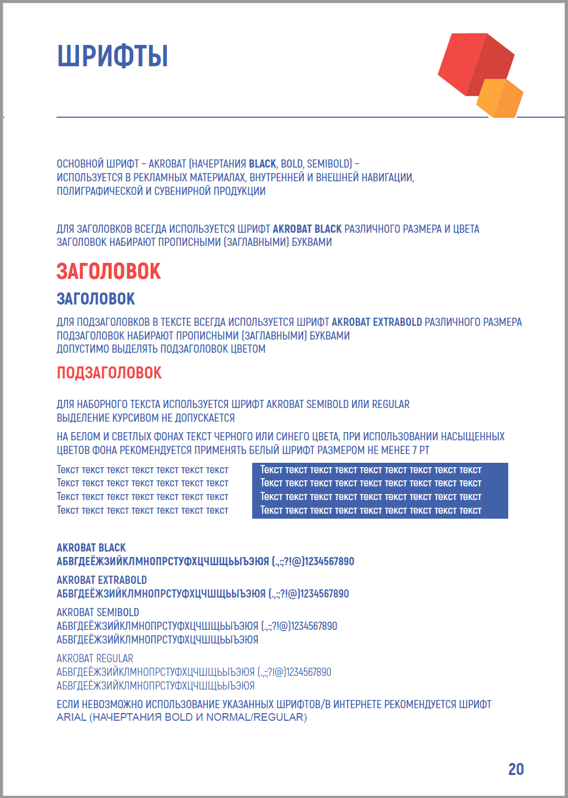Для установки шрифтов на Windows:
Настройка обычных, гостевых пользователей и групп на Mac
Если у компьютера Mac несколько пользователей, следует настроить учетную запись для каждого из них, чтобы пользователи могли изменять свои настройки и параметры, не влияя друг на друга. Вы можете разрешать случайным пользователям заходить в систему в качестве гостя, без доступа к файлам и настройкам других пользователей. Также можно создавать группы. Чтобы выполнять эти действия, Вы должны быть администратором на этом Mac.
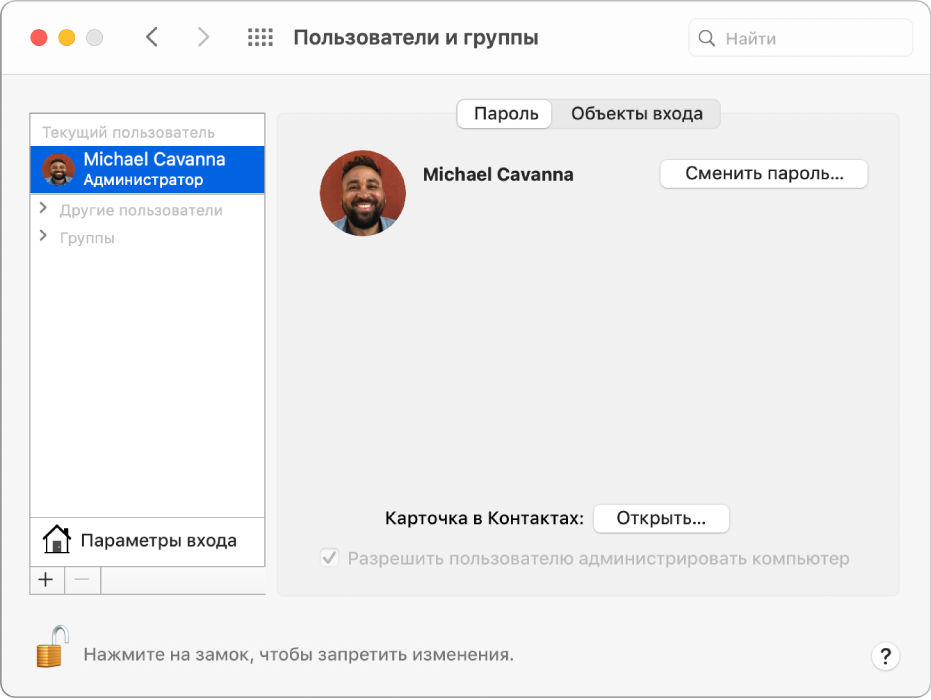Перемещаем панель Dock на правую или левую сторону рабочего стола
По умолчанию Dock расположен в нижней части дисплея, но рабочее пространство можно использовать более продуктивно, если переместить панель на левую или правую часть дисплея. Таким образом увеличится рабочая часть окна во многих приложениях, например в Safari ширина страницы не так важна как высота.
Для настройки Dock пройдите в → Системные настройки… → Dock и в графе «Расположение на экране» поставьте точку напротив «Слева» или «Справа».
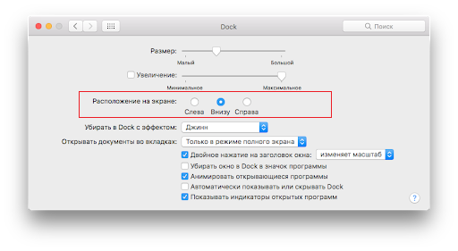Сворачивание окон приложений в значок в Dock
Если в какой-то момент работы с тем или иным приложением вам понадобилось его свернуть, то в левой верхней части окна нажмите на жёлтую кнопку между крестиком и развернуть. Миниатюра программы свернётся в правую часть Dock с приятной анимацией. Но в таком случае программа свернётся не в свою иконку, а создастся дополнительная миниатюра. Если вас такой расклад не устраивает, то всё поправимо.
Пройдите в → Системные настройки… → Dock и поставьте галочку напротив пункта «Убирать окно в Dock в значок программы».
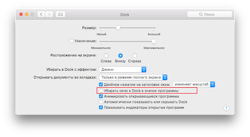Spotlight – поисковая машина macOS
Самый простой способ делать всё на Mac быстрее – воспользоваться поиском Spotlight. Просто нажмите сочетание клавиш ⌘Cmd + Пробел (у некоторых может быть Ctrl + Пробел), и сможете в мгновение ока находить файлы, открывать приложения, искать в интернете (да-да, для этого необязательно открывать браузер) или по всему компьютеру.
Spotlight можно использовать и в качестве калькулятора или конвертера валют. Для примера введите в поисковой строке Spotlight запрос «1000 usd». Поисковик мгновенно отобразит текущий курс.
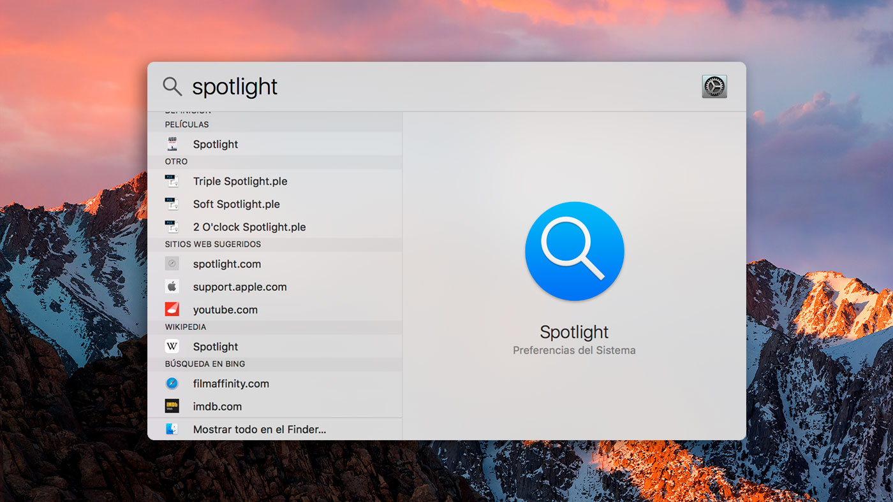Аналог Ctrl + Alt + Delete на Mac
Данное сочетание из Windows не работает на Mac, но есть отличная альтернатива – нажмите ⌘Cmd + ⌥Option (Alt) + Esc, и сразу же получите доступ к меню для принудительного закрытия «зависших» программ.
Если вы ищите аналог Диспетчера задач из Windows на Mac, то в этом материале рассказывается, как его найти.
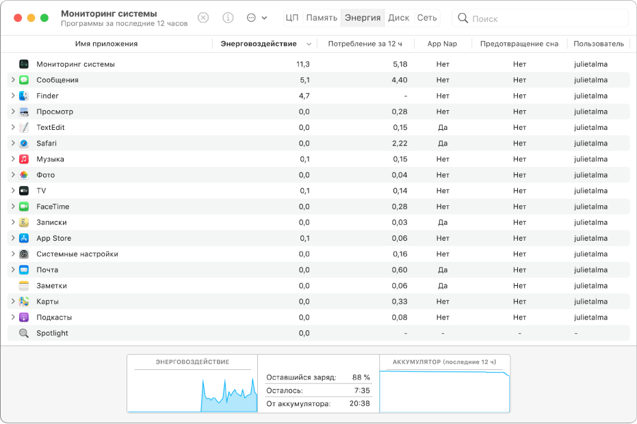